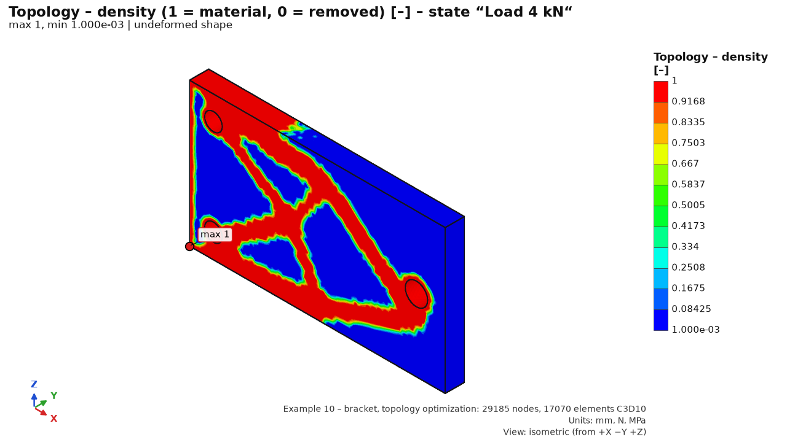

Shows stress, displacement, safety factor, 3D printing results, temperatures, contact pressure and dynamic response as a colour map on the model. Also a section, a probe, a table of the highest locations, reactions and plots. For every maximum the program judges whether it is a real stress concentration or a singularity of the model.
The verdict for the whole study: the smallest safety factor to yield strength Re (Re / σ von Mises) at the most stressed location outside singularities, over all mechanical load cases, against the required safety factor (“required ≥”, default 1.5). It shows Passes / Fails, the governing case and part, and a bar (half = exactly the requirement). The requirement is saved in the study; results are not recomputed, and the Word report uses it. Below: max. stress outside singularities and overall (the difference is a singularity – sharp edge, fixed support), max. displacement and the resultant of reactions. Parts without yield strength (plastics, 3D printing) are not assessed here; printing has its own Tsai-Wu / Hill safety factor. The Table at the bottom has the numbers for all cases (safety factor coloured by the requirement); click a row to show its case.
| Control | What it does | Typical value / note |
|---|---|---|
| Load case | Selects the displayed result: mechanical cases in study order, then thermal cases with prefix “Heat:”. | Also “Bolt preload” (with bolts) and “<case> – creep … h, … °C” (printed part creep). |
| Time | Snapshot of a transient thermal case (“t = 600 s”…). | Transient only. The first snapshot t = 0 = initial temperature. |
| Quantity | The displayed field (list below). | von Mises [MPa]. |
| Deformation | Magnification: none, automatic, 1×, 10×, 100×, 1000×. | Automatic = largest displacement shown as 5 % of the model diagonal. Off for thermal cases. |
| Number of bands | Number of colour bands. | 4–16, default 12. |
| element edges | Shows the mesh on the surface. | Check how many elements sit at the maximum. |
| undeformed model outline | Original shape, transparent. | With deformation, shows the direction of motion. |
| Legend | Band limits and colours; a note if the maximum is a singularity. | For safety factor, colours are reversed: red = low. |
| Text summary | Max. displacement, max. von Mises and location, max. outside singularities, min. safety factor to Re, printing by part, deformation scale, reactions, equilibrium check, warnings. | |
| Highest stresses table | 8 separate locations with their classification. Click a row to mark it in 3D and show the reasons. | See Maxima locations and singularities. |
| Section (bar at the top) | off / X / Y / Z / face, position slider, flip. | A colour section through the mesh interior is also shown. |
| Frequency / Time, phase φ, absolute | Only for “Dynamics: …” items: frequency slider (harmonic) or time slider (transient), phase φ, and “absolute” = displacement + base motion. | See Dynamics below. |
| Dynamics and Contacts tabs | Plots and tables of dynamics (FRF, time history, PSD, SRS, modes) and contact pairs (forces, areas, force–travel curve). | Shown only with these results. |
| Quantity | Meaning | Note |
|---|---|---|
| von Mises [MPa] | Equivalent stress (distortion energy, HMH). | Main quantity for ductile metals; compared with Re. |
| Total displacement, Displacement X / Y / Z [mm] | Magnitude and components, global axes. | Stiffness and direction check. |
| 1st principal stress S1, 3rd principal stress S3 [MPa] | Largest (tension) and smallest (compression) principal stress. | S1 for brittle materials (cast iron) and tension; S3 for compression and buckling. |
| Stress σx, σy, σz, τxy, τyz, τzx [MPa] | Stress tensor components, global axes. | E.g. bending stress of a beam, check by hand. |
| Safety factor to Re [–] | Re / σ_vM at the node, shown up to 10. | A node at an interface of parts takes the lower Re. A part without Re has 10. |
| 3D printing – safety factor (Tsai-Wu/Hill) [–] | Load multiple to failure by the printing criterion; the worse of shell and core. | Printed parts only; others 10. See 3D printing. |
| 3D printing – failure index [–] | Criterion index (1 = failure). | Non-printed parts 0. |
| Temperature [°C] | Temperature field used as the load of the case. | Otherwise “The case has no thermal load.” |
| Equivalent plastic strain PEEQ [–] | Accumulated equivalent plastic strain (CalculiX, nodal value extrapolated from integration points). | Only with a plastic material (Materials → Plasticity); otherwise a note. Grows at singularities. |
| Quantity | Meaning | Note |
|---|---|---|
| Temperature [°C] | Temperature field. | Transient: at the selected Time. |
| Heat flux |q|, qx, qy, qz [W/m²] | Magnitude and components of heat flux density. | Transient: only at the end of the case (last time). |
The thermal summary gives max. and min. temperature with locations, heat of each boundary condition [W] (+ = into the body) and the heat balance (inflow, outflow, residual in %). Details: Heat.
Stress error estimate [%] (CalculiX only) = difference in principal stress between adjacent elements at a node, relative to the stress (ccx gradient estimate). Below ~5 % the mesh is good there; above ~10 % refine (local refinement of a face or sphere in Mesh). At singularities (sharp inner corner, fixed support edge) it stays high even after refinement.
With natural frequencies or buckling enabled in Solve, the Load case menu adds Mode shape n: f = … Hz and Buckling mode n (case): λ = …. The shape is shown with a map of the normalized displacement (max |u| = 1); colours show the shape, not real displacements. The summary gives frequency, ω, period and effective mass fraction.
The Mode shapes tab lists the shapes with frequency [Hz] (λ for buckling), effective mass fractions m_x, m_y, m_z [%] and their sums Σ from mode 1. For base excitation and seismic analysis, a sum ≥ 90 % in every direction is required; otherwise add modes. Click a row to show the shape.
Nonlinear buckling with imperfection (Solve) adds the items Nonlinear buckling (case): imperfection (the initial shape added to the mesh) and Nonlinear buckling (case): λ = … for chosen increments. These show the real displacement in mm from the imperfect geometry (quantities “Nonlinear buckling – total / X / Y / Z displacement”). Below the table the Mode shapes tab shows the ultimate load factor λ_u with its status, first yield and the load–displacement curve (λ over the displacement of the monitored point, λ_u and the linear λ_cr marked). With load control λ_u is the last converged increment; a flat end of the curve means a limit point.
A study with cyclic symmetry is solved on one sector, but with show results as the full 360° model (Constraints step, on by default) the Results step shows the sector rotated N times – maps, probe, maxima and section work on the whole part; the sector results themselves are not changed (switching the display keeps the results). Stresses at the cut faces are averaged over both sides as in a full model.
Natural frequencies are listed as Mode shape n (ND k): f = … Hz; the 360° shape shows k waves around the circumference. For 0 < k < N/2 the frequency belongs to a pair of equal modes of the whole part (the second is the same shape turned by a quarter wave). Effective masses are not given for cyclic modes. Reactions in the summary are per sector.
With members, the Quantity menu has Members – stress σ_eq, displacement |u|, N, Vy, Vz, T, My, Mz, utilization EN 1993 (after the solid quantities for a model with solids). σ_eq, displacement and utilization are coloured on the deformed axis (undeformed in grey). Internal forces are diagrams perpendicular to the member in its plane (My and N, Vz, T in the z direction of the section; Mz and Vy in y); max red, min blue. Click a member = probe (member and position s from the start).
The Members tab: extremes of |N|, |Vz|, |My|, |Mz|, σ_eq and displacement per member, utilization to EN 1993-1-1 (max over all cases) and the governing check. Click a row to see all check rows of the member (section class, 6.2, buckling, lateral-torsional buckling, interaction) and mark it in 3D. The summary gives support reactions (Fx…Mz) and the equilibrium check. Mode shapes of members alone are drawn on the member axis.
With contacts, the Quantity menu also has:
| Quantity | Meaning | Note |
|---|---|---|
| Contact – pressure [MPa] | Contact pressure on the pair faces. | Indicative only on line contact and with node-to-surface. |
| Contact – status [–] | −1 not a contact node, 0 not in contact, 1 sliding, 2 sticking. | Discrete colours; shows where the interface opens or slips. |
| Contact – opening [mm] | Gap of the deformed mesh between the pair sides. | |
| Contact – slip [mm], frictional stress [MPa] | Tangential displacement and frictional (shear) stress. | Only with friction. |
Contact quantities are on the surface; best seen in a section or with the counterpart hidden. The Contacts tab lists the pairs of the case (normal and friction force, contact area and fraction, max and mean pressure, opening, slip, nodes sticking / sliding / not in contact) and the force–travel curve of the prescribed motion over all sequence steps. The pair force is the exact CalculiX force (integrating nodal pressure overestimates it). In a nonlinear analysis the safety factor is a stress margin, not a load multiplier. A partial result (non-converged or stopped) has a red label in the summary and the Contacts tab.
After a dynamics analysis (Dynamics step), the Load case menu has the items Dynamics: …:
| Item | Quantities | Controls |
|---|---|---|
| harmonic – at frequency | von Mises and displacement – amplitude over phase; von Mises and displacements at phase φ | Frequency slider, phase φ (0–360°), absolute (displacement + base motion) |
| harmonic – envelope | maximum over frequencies (stress, displacement) and the frequency where it occurred | |
| sweep – damage | damage D from a sine sweep | fatigue from sweep rate and number of passes |
| transient – in time / envelope | von Mises and displacements in time; maximum over time and its time | Time slider |
| random vibration – RMS, 3σ, damage | von Mises RMS (Segalman) and 3σ (informative), displacement RMS, spectral damage D, life [h] | |
| shock – mode combination / transient envelope | von Mises and displacements by mode combination (CQC / SRSS); optionally the transient envelope of the pulse | |
| mode n – f Hz | shapes of the modal basis (normalized, max 1) |
The Dynamics tab: a plot at a probe (FRF – amplitude and phase, time history, response PSD, input ASD, pulse SRS, reactions; the probe “max σ” = node with the largest stress envelope, added automatically) and a mode table with frequency, damping and effective mass (click = shape in 3D). Dynamics results carry a note on damping uncertainty (±50 %).
Shell results are in the menu as Shells: … (top / middle / bottom layer, membrane and bending stress) – see Shell model. Printed parts have the Print detail (voxels)… button – see Print detail (voxels).
2D results are 2D: … – see 2D analysis by section.
In the top bar choose Section: X / Y / Z (plane ⟂ axis) or face (plane of the selected face; select it first, e.g. in the Supports step). The slider moves the plane; flip shows the other half. The results show a colour section through the mesh interior: stress across the wall, the neutral axis of bending, or temperature inside. The plane is in the undeformed position and deforms with the model. The probe also works on the section.
Tip: A section ⟂ to a wall shows how many elements are across the thickness and whether a coarse mesh affects the stress.
The Highest stresses table has separate locations (clusters of about 3 elements) with the highest value of the displayed stress quantity. For displacement, safety factor and printing, locations come from von Mises; for heat, the hottest places or highest flux. The classification:
| Classification | When | How to evaluate |
|---|---|---|
| singularity – fixed support edge, support edge, sharp inner edge, point load, bolt connection (orange) | Within 1 element of a support edge or bolt connection, at a sharp inner corner without a fillet, or on a small loaded face (smaller than (3 × element)²). | Theoretically infinite stress – grows with refinement. Do not evaluate the node value. Evaluate 2–3 elements away, in a section, or by nominal stress. Add a fillet in CAD, or model the real support. |
| boundary condition – support face, near a support, edge of a loaded face (grey) | On a support face (the support prevents transverse contraction), within 1.5 elements of a support, on the edge of a loaded face. | Check the support against reality (compliance, contact area). Evaluate outside its neighbourhood. |
| real location (green) | Fillet, hole, smooth surface. | A real stress concentration. Verify by convergence (refine locally 2× – change below 5 %) and evaluate against Re or fatigue. |
An outer (convex) edge is not a singularity. A symmetry plane (displacement only normal to the face) does not create one. If the highest location is a singularity, the summary also gives Max. von Mises outside singularities, and the legend warns “… is a singularity … – do not evaluate by the nodal value”. The reasons are in the row tooltip.
Warning: the classification is a heuristic over the mesh – a guide, not an assessment. The designer decides what governs.
The Line plot… button opens a modeless dialog (the 3D window stays usable):
| Control | What it does |
|---|---|
| Point A, Point B + Click in 3D | Ends of the segment in the undeformed position [mm]; enter numbers or click the model (surface or section; the point is converted from the deformed display). |
| Swap A ↔ B, A = location of maximum | Reverses the segment; A = node with the highest value of the displayed quantity. |
| Case, Quantity, Number of points | Load (or thermal) case, quantity (von Mises, principal, components, displacements, temperature, error estimate, print safety factor), number of points. |
| Plot profile | Value vs. distance s from A; blue line and markers A, B in 3D (also inside the body). Points outside the body are omitted. |
| Stress linearization | Stress on the segment across the wall (SCL) split into membrane P_m, bending P_b and peak F (ASME BPVC VIII-2, Annex 5-A). Table of von Mises and Tresca: P_m, P_m + P_b, peak at both ends, total stress. |
| Export CSV… | Profile (point, s, x, y, z, value, inside 1 / 0) and linearization to CSV (format as in export of results; English uses comma and decimal point). |
The linearization segment runs through the whole wall, perpendicular to it, both ends on the surface. Use at least 3–4 elements across the thickness (otherwise a warning). Assessment per ASME VIII-2 / EN 13445-3: P_m ≤ S, P_m + P_b ≤ 1.5·S (S = allowable stress). On a curved surface an end may lie slightly outside the mesh; move it inward.
The Mesh convergence… button runs a COPY of the study on successively finer meshes (element size ÷ r per level) and tracks a quantity; the main window results do not change. Options: quantity (max. von Mises, max. displacement, value at a point, natural frequency of a mode, min. print safety factor); point (click in 3D or location of the maximum); Sphere radius (refinement only in a sphere around the point; “globally” = whole mesh); levels (2–6); ratio r (1.5); change limit (2 %). The table fills after each level (element size, nodes, elements, value, change, ccx error estimate); the graph shows value vs. element size.
Result: a verdict (converged = last refinement changed the value less than the limit). From 3 levels: convergence order p, Richardson extrapolation and GCI (Roache, ASME V&V 20). A value that keeps growing with refinement, with differences that do not shrink, is a singularity (sharp inner corner, fixed support edge, point force) – no finite value there. Each level with r = 1.5 has about 3.4× more elements; 3 levels take ~15× a single analysis.
The Submodel… button computes a finer local model of a critical region from the displayed result, without remeshing the whole model. The parts are cut by a box (centre + size in the global axes) or a sphere (centre + radius) and meshed with the submodel element size. On the cut faces (where the region cuts through the material) the displacement of the global result is prescribed (interpolated with the element shape functions); the original free surface inside the region stays free.
Transferred into the region: fixed supports and prescribed displacements, force (the same traction F/A) and pressure on faces, gravity, rotation and inertia (body forces). Other conditions inside the region – bolt couplings, bearing and remote loads, elastic, cylindrical and remote supports, edge or point forces, weld roots, thermal load – stop the submodel with an error (move or shrink the region). Nonlinear analyses, printed and orthotropic materials are not supported.
Cut check: von Mises of the submodel on the cut faces vs the global field at the same points. Mean difference ≤ 10 % and max. ≤ 25 % = the cut lies far enough from the stress concentration. When it is exceeded the summary is red: enlarge the region (cut at least ~2–3 notch sizes from the peak) or refine the global mesh there. Quantity Cut check – |Δσ_vM| to the global model shows where on the cut the difference is. The summary also shows the equilibrium check (free nodes carry exactly the transferred loads) and the max. stress of the submodel vs the global model in the region.
Submodels are kept with the results and saved in the .fea project (they are discarded with the results when the study changes); the Word report has a section per submodel.
MCP: fea_submodel_run, fea_submodel_results, fea_submodel_render. Verification SM1 (plate with a hole, Peterson) and SM2 (submodel vs a fine full model, 0.4–0.6 %).
The Topology (BESO)… button in the Results panel removes lightly loaded material from a full “design space” and keeps what carries the load. Use it to lightweight a part or to propose a shape for 3D printing or milling: it shows where the load path should run, as a basis for remodelling in CAD.
| Parameter | Meaning | Recommendation |
|---|---|---|
| Target volume | Percentage of the original volume to remain. | Default 40 %. Reasonable 30–60 %; below ~25 % the shape breaks into thin struts and compliance grows fast. |
| Min. thickness (filter R) | Sensitivity filter radius [mm]; sets the smallest strut and pattern fineness. | Default 6 mm, about 2× the element size (4 mm mesh → R ≈ 8 mm). R below element size makes no sense (checkerboard); too large coarsens the shape. |
| Removal rate (ER) | Share of volume removed per step [%/step]. | Default 4 %. Reasonable 2–5 %; smaller ER = slower, more stable, usually better. |
| Max. iterations | Upper limit of steps (and CalculiX runs). | Default 60. Needed steps ≈ ln(target) / ln(1 − ER) plus fine-tuning, e.g. target 40 % at ER 4 % ≈ 23 steps + 10–20 fine-tuning. May end earlier on convergence. |
| Protected regions | Selections where material must not be removed. | By default all study selections (supports, loads, imprints). Click to deselect; unprotected faces may be hollowed out. |
Tip: time = iterations × time of one analysis on the mesh. For a quick idea use a coarser mesh (5–6 mm); a finer mesh gives a finer shape but takes proportionally longer.
Export lightweight STL… saves a closed solid: the isosurface of density ρ = 0.5 (Marching Tetrahedra) joined with the trimmed mesh surface, normals outward. Load it into a slicer or CAD as a remodelling guide.
MCP tool fea_topo_opt_run (parameters target_volume_fraction, filter_radius,
evolution_rate, max_iterations, non_design_selections, output_stl) runs the same optimization without the GUI and returns
the history, compliance of the full and resulting design, and the STL path. See Automation.
Example 10 – bracket, topology optimization opens a steel plate 160×90×12 mm (the design space), fixed to a wall by two M10 bolts, with an eye at the free end and a 4 kN load. It opens with the statics results of the full design and the optimization result (target 40 % volume, filter R 8 mm, ER 4 %). Topology – density and Topology – final shape are in the results. The 40 % target is reached in iteration 23; the design settles after 40 iterations (about 3 min). Compliance rises from 104.6 to 230.6 N·mm (2.2× at 40 % volume). The remaining material forms a truss bracket with two tension members to the bolts and a compression strut.

With a plastic material the button Plasticity assessment… in the Results panel evaluates every step with PEEQ (same computation as the Word report and MCP fea_plasticity_assess):
The table gives the max PEEQ and where (part, coordinates), both utilizations, the triaxiality at the governing node; the second table the constants per material.
A warning appears when PEEQ exceeds the last point of the hardening curve. Double-click a row = PEEQ of that step in 3D. Verified by PL1–PL5 (python -m verification.run_all PL1 PL2 PL3 PL4 PL5;
PL5 = uniaxial strain against the closed-form J2 solution: PEEQ, triaxiality, both utilizations and the residual stress to 0.001 %).
Caution: maxima at singularities (sharp inner corners, support edges, point loads) grow with refinement – assess away from them. The checks cover the computed strain only, not the complete design procedure of the standard (load factors, ratcheting, shakedown, buckling).
Tools → Parametric study… solves the study for several values of its inputs and compares the key results. Each design point is a full analysis of a copy of the study – the main window does not change until you take a point over.
1, 1.5, 2 or a
range start:stop:n.CAD parameters (dimensions) are not swept – the program does not regenerate geometry; for a modified model use
Replace geometry. MCP: fea_param_study_run, fea_param_study_results,
fea_param_study_apply (group results). Verification PS1: cantilever V1, deflection = Timoshenko × F / E within
0.7 %, scaled points equal solved ones to 1e-6.
The Export (VTU, CSV)... button writes results to a folder (MCP: fea_results_export – same files and columns).
All numbers start at 1 and match the solver input (CalculiX .inp), like “Node Number” in ANSYS or “Node / Element Label” in Abaqus:
node number = *NODE, element number = *ELEMENT, part number = ELSET P<n>, case number = order of the load case (linear statics: the *STEP number).
| File | Content |
|---|---|
<study>_<NN>_<state>.csv | nodal values of state NN (01, 02 …): node_id, part_id, part, n_parts, x/y/z_mm, ux/uy/uz/umag_mm, sxx…szx_MPa, von_mises_MPa, s1–s3_MPa and other fields of the case (temperature_C, contact_pressure_MPa, contact_penetration_mm, contact_slip_mm, contact_shear_MPa, contact_status, contact_opening_mm, print_safety, print_index, stress_error_pct, peeq, topo_density) |
<study>_K<NN>_<name>.csv | combination NN (study order) – columns as for a case; envelope: node_id, part, coordinates, governing_combination_number (position in the envelope list from 1), envelope value, governing_combination |
<study>_nodal_all.csv | option All cases in one file: row = node × case, step_index and step_name first (combinations stay separate) |
<study>_elements.csv | option Element table: element_id, part_id, part, element_type (C3D10), nodes n1–n10 in CalculiX order, centroid xc/yc/zc_mm, volume_mm3; for one selected case also nodal values averaged over the element (…_nodal_avg) |
<study>_reactions.csv | reactions: step_index, step_name, selection, constraint_kind (fixed, displacement, cylindrical, remote_support, elastic), Fx–Fz and F_mag [N], Mx–Mz and M_mag [N·mm], mref_x/y/z_mm, result_kind, combination_index; a TOTAL row after each case |
<study>_<NN>_<state>.vtu, .pvd | tet10 mesh with fields for ParaView; the .pvd collection has the cases as time steps 1, 2 … (combinations after them) |
dialect="excel" switches).| Message / symptom | Cause and solution |
|---|---|
| “The quantity is not available in the result (no printed part).” | 3D printing quantities exist only for studies with a printed part (a material with print properties). |
| “The case has no thermal load.” | Temperature quantity for a mechanical case without a Temperature load. Thermal analysis temperatures are in the “Heat: …” cases. |
| “Heat flux is stored only for the end of a transient case – choose the last time.” | For a transient case the flux is shown only at the last time. |
| The stress maximum grows with every refinement | A singularity (sharp corner, fixed support edge, point force). Evaluate away from it, add a fillet or a more realistic support. |
| Results disappeared (“Study changed – results discarded, recomputation needed.”) | Every study change discards results. Undo (Ctrl+Z) or run again. A saved .fea project contains the results. |
| Deformation looks absurdly large | Automatic scale magnifies deformation. For true shape choose 1×; read displacements from the legend. |